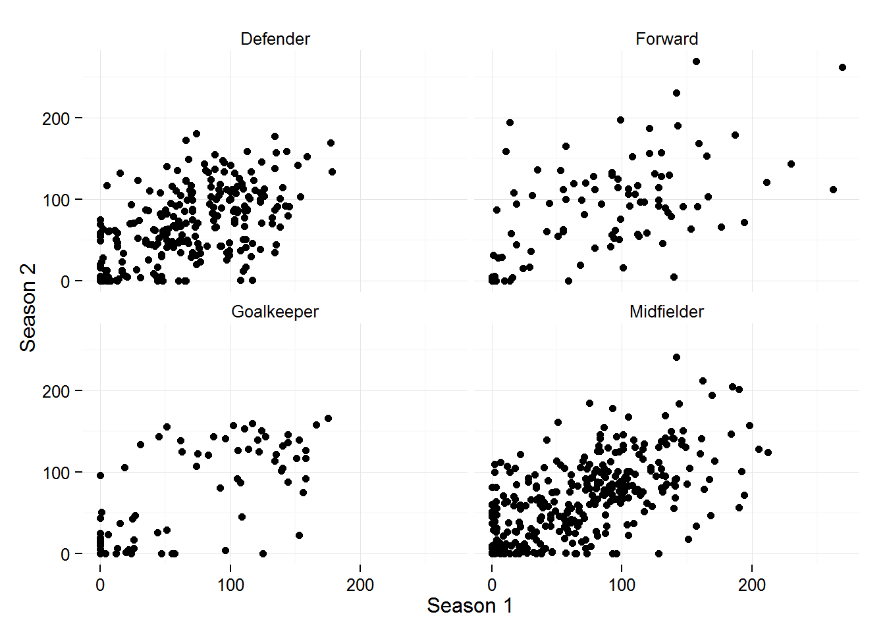

The pastseasons dataset contains performance data for past seasons for all current players in the fantasy.premierleague.com game. Not all players in the game have past data, such as Alexis Sanchez, these players are still included in the dataset but their performance data is recorded as NA
Once the package has been loaded, to access the dataset:
data(pastseasons)The dataframe has dimensions 1936 rows and 24 columns.
str(pastseasons)## 'data.frame': 1936 obs. of 24 variables:
## $ pos : chr "Goalkeeper" "Goalkeeper" "Goalkeeper" "Goalkeeper" ...
## $ team : chr "Arsenal" "Arsenal" "Arsenal" "Arsenal" ...
## $ pts : num 157 157 157 157 157 157 155 155 155 155 ...
## $ id : num 1 1 1 1 1 1 2 2 2 2 ...
## $ name : chr "Szczesny" "Szczesny" "Szczesny" "Szczesny" ...
## $ value : num 5.5 5.5 5.5 5.5 5.5 5.5 6 6 6 6 ...
## $ pct : num 12.3 12.3 12.3 12.3 12.3 12.3 11.2 11.2 11.2 11.2 ...
## $ season : chr "2008/09" "2009/10" "2010/11" "2011/12" ...
## $ mins : num 0 0 1350 3420 2250 ...
## $ goals : num 0 0 0 0 0 0 2 2 2 2 ...
## $ assists : num 0 0 0 0 0 0 0 1 1 0 ...
## $ cs : num 0 0 6 13 10 16 9 11 7 17 ...
## $ ga : num 0 0 19 49 24 41 36 42 19 26 ...
## $ og : num 0 0 0 0 0 0 0 2 0 0 ...
## $ pens_svd: num 0 0 1 1 1 1 0 0 0 0 ...
## $ pens_msd: num 0 0 0 0 0 0 0 0 0 0 ...
## $ yel : num 0 0 1 2 1 2 5 8 1 1 ...
## $ red : num 0 0 0 0 0 0 2 0 1 1 ...
## $ saves : num 0 0 45 82 71 113 0 0 0 0 ...
## $ bonus : num 0 0 0 8 3 4 0 5 11 24 ...
## $ ea_ppi : num 0 0 0 469 314 475 0 436 285 463 ...
## $ bps : num 0 0 0 0 0 194 0 0 0 228 ...
## $ fin_val : num 4.5 4.5 4.3 5.9 5.3 5.9 5.9 5.8 5.3 5.6 ...
## $ ssn_pts : num 0 0 62 139 102 157 85 103 88 155 ...The pastseasons dataset could potentially be used to build a model to predict performance for the coming season, but unfortunately the dataset doesn’t include the pre-season data for each of those seasons. For example, Shay Given has previously played for Newcastle and Manchester City, but only his current club (Aston Villa) is recorded in the dataset.
A model based on the points a players scored in previous season is unfortunately not that great. I reduce the dataset so it only includes data for 2010/11, 2011/12, 2012/13 and 2013/14, and reduce the number of variables.
tmp <- subset(pastseasons, season == "2010/11" | season == "2011/12" | season == "2012/13" | season == "2013/14",
select = c("name", "id", "pos", "team", "pct", "value", "season", "fin_val", "ssn_pts"))
dim(tmp)## [1] 1288 9# we need the reshape2 package, to create a 'long' dataframe, with one player per row
library(reshape2)
ssn2ssn <- dcast(tmp, name + id + pos + team + pct + value ~ season, value.var = "ssn_pts")
head(ssn2ssn) ## name id pos team pct value 2010/11 2011/12 2012/13
## 1 Szczesny 1 Goalkeeper Arsenal 12.3 5.5 62 139 102
## 2 Koscielny 2 Defender Arsenal 11.2 6.0 85 103 88
## 3 Vermaelen 3 Defender Arsenal 0.5 5.0 15 132 70
## 4 Gibbs 4 Defender Arsenal 3.7 5.5 7 61 93
## 5 Jenkinson 5 Defender West Ham 0.2 5.0 NA 12 51
## 6 Mertesacker 6 Defender Arsenal 7.2 6.0 NA 59 135
## 2013/14
## 1 157
## 2 155
## 3 29
## 4 89
## 5 50
## 6 157# rename the variables with numbers in them (just for ease of typing later)
names(ssn2ssn)[7:10] <- paste0("s", 1:4)
# now plot season to season points
ggplot(ssn2ssn, aes(x = s1, y = s2)) +
geom_point() +
geom_point(aes(x = s2, y = s3)) +
geom_point(aes(x = s3, y = s4)) +
theme_minimal() +
labs(x = "Season 1", y = "Season 2") +
facet_wrap(~pos)